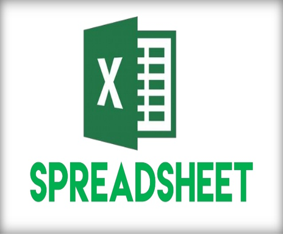
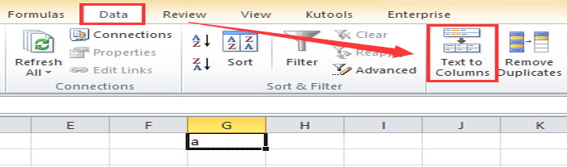
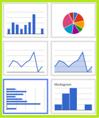
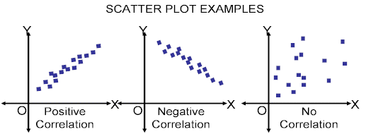
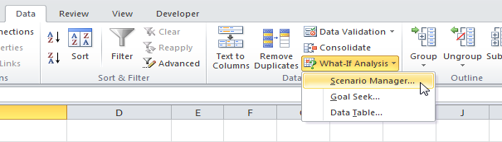
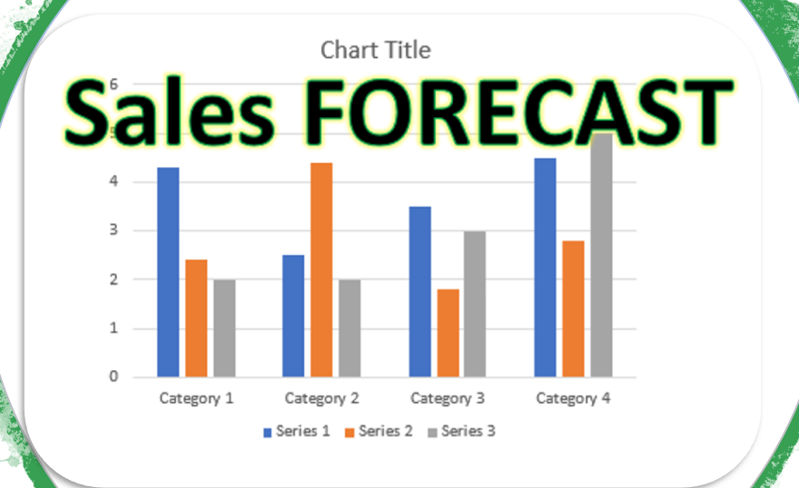
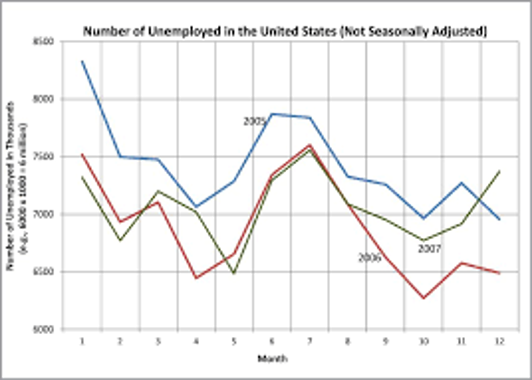
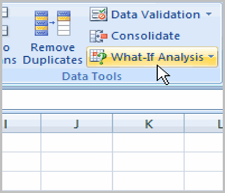
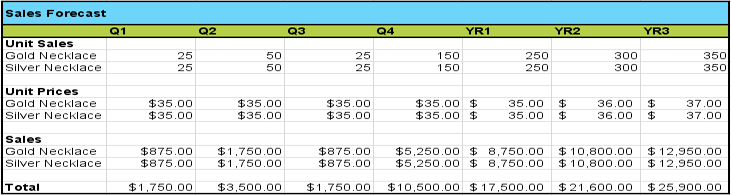
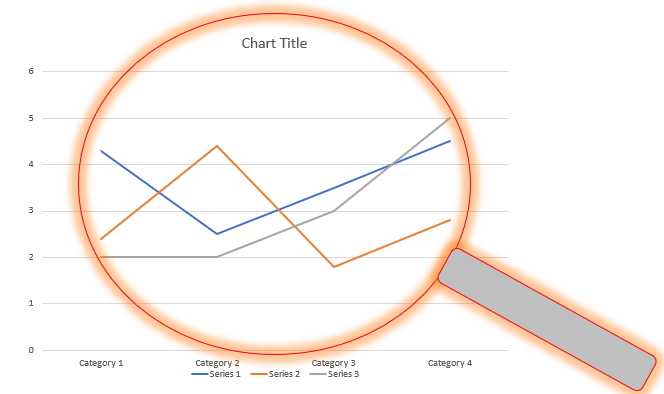

Definition and usage of Spreadsheets
 Spreadsheets play an important role in business life where day to day companies use it to solve and organize their data. A spreadsheet is organized into rows and columns that wouldn't confuse the user to store small or large set of data within a system of cells. A cell is a place where can contain data value or calculation operating such as dividing, multiplying or percentages. It helps companies or any user to process and manipulate data by providing variety of useful functions such as sorting, filtering or controlling all kinds of fonts. The user can use spreadsheet to solve any complex problems or organize any system by applying different type of formulas, also by displaying their data in suitable graphs so could spot the information needed easily.
Use of Spreadsheets
Manipulating Complex Data
Manipulating data in spreadsheet is the process of altering data to make it easier to read, as well as organized more to be able to spot data needed. Using spreadsheet to processes the function of manipulating data can be either by updating, deleting or inserting data from the table. By applying those modest manipulating techniques the user would be able to reach any data without getting lost with unorganized data table. Examples of manipulating complex data by using spreadsheet:
EX 1: Using sorting function to organize your data in alphabetic order where can be from A to Z or the opposite. This function allows the user to find data more effortlessly and manage them based on the order of letters, such as list of employees names or occupations in a company.
EX 2: Another method of manipulating data would be using “text to columns” function. By applying this magical function on your data table the user can split a single column of text into multiple columns. Companies would be able to split the full names of their workers into first and surname easily by applying this functions, it helps to display clear details about workers. However, the user able to choses the way needed to split columns where can be by splitting at each comma, period or other character.
Analysing data
Spreadsheet helps companies which are usually dealing with a massive amount of data daily that mostly displayed in complicated tables where is hard to spot the important data or detect information needed. Therefor, analysing of data would make life more easier for every person or organizations that deals with huge amount of data in their work. Overall, excel provides variety of different methods to analyse data according user need.
An example would be using of charts which can result with more than a sheet full of number and letters. This function can quickly analyse any data user wants to be analysed by displaying those data in different smoothly ways that able to be read with effortless. Organization can use charts to display the amount of sales received during a week, moth or year. Those data can be viewed by using different type of charts such as, Pie Chart where it would display the amount of sales in percentages so the user could gather numerical information. Also, using Line chart would be useful to show the trends of categories over time (days, months and years), where it helps organizations to spot in which month they had most sales so they could use the same patterns again and get more profit. 
Supporting Decision Making
Goal Seek
Is the function that allows the user to set a (goal) in one cell and let the spreadsheet to reach it by changing the value in another cell. Which means when using a model for setting a target, the user has to start of the desired resulted called the target value. An example, a user is planning to buy a new laptop and unable to buy it at the moment, so using Goal Seek function would help him to set a target (which is the price of the laptop) request the user how much could save per day to reach the target then will tell him how many days would take to cover the cost. The model after this step would use the formulas to work out what one of the variables requests to be give that results. When Goal Seek function starts working out and run correctly, it constantly tries new values in the variable cell to find a solution to the problem. This will facilitate the work of any manager to give decisions without containing any errors because goal seek function would supply them with accurate details based on the data been entered by mangers so they definitely would be able to give the right decisions.
Regression
Using regression analysis function in spreadsheet is useful tool, where
it permits the user to analysis data. As it provides a set of statistical
processes for valuing the relationships between variables, where it
contains many techniques for modeling and analyzing a number of variables
especially when the effort is on the relationship among dependent
variables and one or several independent variables.
Regression analysis is beneficial function in the hands of capable
manager where it supports them to give right decisions based on it
because it would determine for companies their future profit when graphs
would show a positive or negative correlation. Also, by explaining the
relationship among different variables, this great function would help
managers to understand how their business works and make valuable
predictions about their progress. An example of this beneficial function
may be used for understanding the impact of patrol prices on profitability
or the effectiveness on companies' sales in term of economic growth.
This graph is showing the some examples of regression correlations, the first one (Positive correlation) where the trend line can match the correlations therefor is positive, the second one(Negative)that also negatively match the trend line growth with correlation, and the last one(No correlation) would not match either positive or negative trend lines because correlation are not in relationship together.
Scenarios
Companies would normally use scenario tool to track companies investing,
saving or paying money for which leaves significant effect on the overall
finances. Managers to benefit the finical part of their business can use
this function which would determine any effect on the company profit
whether from cost side or investments, where all that would be done by
setting a different values onto what-if function by determining what the
company would be focusing on to keep the progression on.

Furthermore, what-if can be used to do calculation on project costs
in case if any values have been changed would be replaced of another
value based on the option that been added by the user. Applying this
function would be by using excel software, facing the worksheet and
select the cells that includes values that the manager wants it be
changed, then going over and clicking on the “data tap” where the
what-if function is, after applying those steps it will resolve or
find effective solutions.
Data Mining
Data mining is the type of function that process over large data placed to detect patterns and establish relationship to solve any issue through data analysis. As well as it allows companies or businesses to predict future trends. Using data mining in spreadsheet would let managers of companies to apply effective decisions because this technique have the ability to uncover hidden patterns and relationships in data that are able to apply to make predictions that impact business. Furthermore exact data mining benefits vary depending on the aim of the business and the industry, but it’s always allow managers to discover frequent patterns that would support their decisions. An example, financial industries of companies uses data mining tool to detect fraud, also some other industries uses data mining to expand product safety, detecting quality matters and improving operations.
Complex Problems Types
Cash-Flow Forecasting
 Is used to track what comes into a business and what goes out. As it’s the ability of managing your business finical part by estimating all the cash outflows. The idea of preparing your cash flow forecast would let users know how much cash needs to come in to cover the cash going out such as covering taxes. Also, you would be able to cover how much you are paying for employees and suppliers. Moreover, is allowing you to manage your forecast for one year, month, week or day, where is useful to follow the progress of a business.
Budget Control
Creating budget template is essential step for any size of business because that keep them updating their important data constantly as it helps you to decide whether your budget will be able enough to raise your business. The paramount reason of controlling your budget will avoid you of bankruptcy and warn you of any kind of decreases might face the budget, also to keep costs under control so they don’t over spend. Overall, using spreadsheet for business budget control would figure out whether a manager has done his job perfectly or not and will tell the user if future planes need changes or not.
Trend-Analysis
Is allowing the user to analyse in the way to predict what will happen with a their stock in the future. Companies would review the previous results of their revenue and detect the patterns that gives high performance so would positively effect on budgeting because is giving you a full idea of how to progress your business by finding out sales directions. Trend analysis afford companies ideas and records of past income, net cash flow and expenses of the past, by using those ideas they can use them to progress the production of their businesses.
This graph shows the amount of money supported by details about a product sale within a month. It’s clearly showing which month it has the least and the highest amounts of sales, therefore the user could find out simply in which month their product provided high profit. By using those kind of graphs and charts the user can easily analysis the data because it will be more organized and easy to spot the best patterns to be used again and gain profit.
WHAT IF SCENARIOS
 Managing your information by storing them and compare different versions of the data in a worksheet. This function would make it easier to compere data, as it returns one value if the conditions is True and anther value when the condition is False. This function can be applied by entering it with your formula in the needed cell of the worksheet.
Sales Forecasting
This project is extremely important for all companies because it help to develop their financial aims and reports where is the process of predicting sales in the future. Using spreadsheet can help to sort out complex or simple sales forecasts of any company or business. An accurate sales forecast allows companies to make informed business decisions and predict the performance of long and short term. Spreadsheet also would allow the user to calculate the growth rate, profit margin, gross profit and the total sales for companies products. Overall, by using spreadsheet to work out the sales for cast of any business, the user can predict his forecast based on past sales data and the economic trends.
In case of working out a sales forecast of any business on papers the user would be wasting of time and the total results might not be correct because of the high probability of facing many errors. While on the spreadsheet, the system is calculating in more accurate way and in quick easier way which would defiantly resulted with correct outcomes because the program would automatically calculate without any errors.
Payroll Projections
Moving around any business or organization you would see that all of them have a system to workout the wages for the staff. Using excel to create a table containing employees’ salaries (Payroll projection) would let you manage the budget by identifying the total amount of their salaries and calculates the taxes payed according their wages. This system is preventing any organization to face any issues in their budget and will make sure that all workers will receive their salaries which has been clearly calculated. Beside that they would simply find out the salary of any employee in case of need.
Statistical Anaylsis
 Statistical analysis is the data been collected in one table presenting large amount of data where can be used to find patterns and trends by detecting data. Using spreadsheet to analysis our statistical problems would be best method, where it can use lots of mathematical operations such as finding average, median, mode, max, and min to calculate any statistical calculation. Spreadsheet would make it easier for the user to spot errors in the data and it gives accurate calculation for any data.